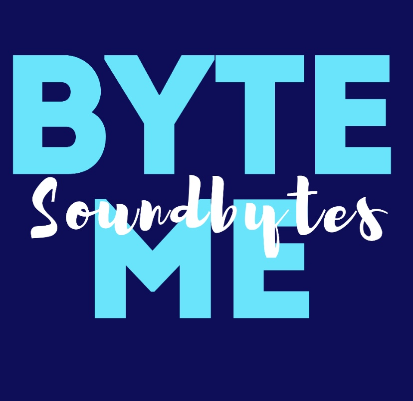

Founded in 1996, Soundbytes was the first secular co-ed a cappella group on Carnegie Mellon University’s campus. |
|||
|  |
Soundbytes will soon be releasing a professional EP recorded by producer Kevin Killen at the Vault Studios in Pittsburgh! Stay tuned on all streaming services for "Byte Me". You won't want to miss it |
||